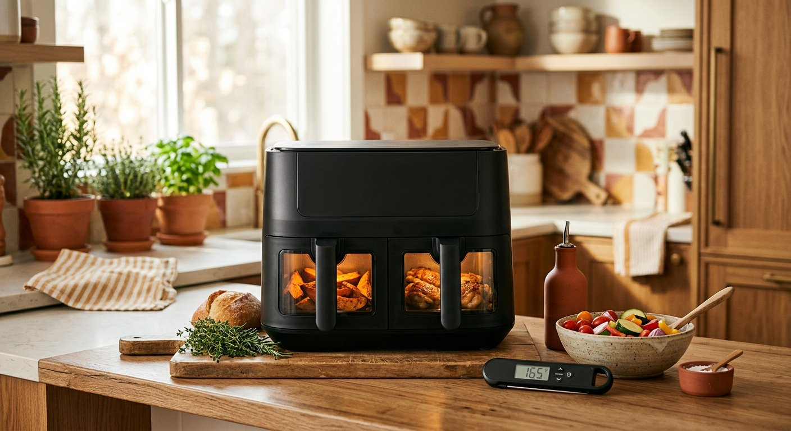
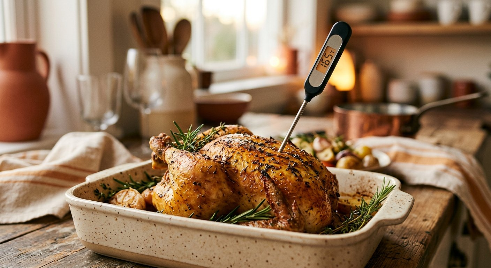

Seasonal 6 min
Holiday hosting 2026: can an air fryer carry the big meal?
Oven scheduling is the real bottleneck. What to hand off to the countertop — and which of the three fits the job.
Read the edit →The Holiday Edit Issue 02 · November 2026
Three air fryers and two meat thermometers — chosen, measured against their official listings, and written up as buying guides that start with your questions. No star ratings, no “best of” lists, no prices that go stale. Just what fits your kitchen.
Prices and availability live on Amazon — we link you there. How we make money · What we could not verify

Every specification below is read from the official Amazon listing. Blank means unverified — we don't fill gaps with guesses.
Air Fryers · P-01 · Two baskets
Two baskets you can watch through the windows, timed to finish together. The question is not whether it fries — it is whether two 3-quart baskets fit the way you actually cook.
Check on Amazon (paid link) Read the breakdown →
Special Link pending Associates test (FLG-004). Official listing
Air Fryers · P-02 · Oven-style
A countertop oven that air-fries. The trade-off is footprint and weight: this is a 26-quart appliance, not a compact basket fryer.
Check on Amazon (paid link) Read the breakdown →
Special Link pending Associates test (FLG-004). Official listing
Air Fryers · P-03 · Family-size
One big basket, one simple panel. The right choice when you cook one thing at a time for a household — and want it done without a manual.
Check on Amazon (paid link) Read the breakdown →
Special Link pending Associates test (FLG-004). Official listing
Meat Thermometers · P-04 · Instant-read
The instant-read you keep by the grill. Speed and accuracy are the whole point — everything else is secondary.
Check on Amazon (paid link) Read the breakdown →
Special Link pending Associates test (FLG-004). Official listing
Meat Thermometers · P-05 · Wireless smart
Three proteins, three donenesses, no standing by the grill. The cost of that freedom is an app, a hub, and charging.
Check on Amazon (paid link) Read the breakdown →
Special Link pending Associates test (FLG-004). Official listing
3 picks
Two baskets, one big basket, or a countertop oven — start with your counter, not the features.
Shop air fryers
2 picks
Instant-read for the final check, wireless for the long cook — or both, and why.
Shop thermometersThanksgiving week: what the countertop can carry, the number that decides the turkey, and the first week with a new fryer.
Seasonal 6 min
Oven scheduling is the real bottleneck. What to hand off to the countertop — and which of the three fits the job.
Read the edit →Seasonal 5 min
USDA says 165 °F for all poultry. Here is where each thermometer wins on the big day — with the sources to prove the number.
Read the plan →Evergreen 5 min
Three deliberate experiments, two things to skip, and the habit that earns the counter space.
Read the plan →Guide
Form factor first: footprint, doors, and how you load it.
Read →Guide
Quarts are not servings. Measure the basket, not the marketing.
Read →Guide
Dishwasher-safe is not the same as easy to clean.
Read →Guide
Every preset you will never use is still space you paid for.
Read →Guide
Speed at the grill vs freedom to walk away.
Read →Guide
What ±0.5 °F, NIST and NSF mean — and what they do not.
Read →Short version: we read the official listing, quote it exactly, and leave blank what we can't confirm. The long version lives in the studio.
Always true
The affiliate statement sits above the fold on every page and repeats in the footer. Every paid link is marked (paid link).
Always true
Specs trace to the official Amazon listing with a date. Conflicts on a listing get published as conflicts — never quietly resolved.
Always true
No prices, no star ratings, no popularity claims. If we can't confirm it from an official source, you don't see a number.
Review suggestions & choose the direction Open questions register Executive summary